MarkFlow · 设计稿 vs 实现 像素级对照
把「原型设计稿」与「当前 pnpm build 产物」的同一视图两两并排，逐项给出还原度结论。供后续自测参考。
采集日期 2026-07-13
侧栏宽度 420px（@2x 采集）
富状态视口 1700px · 空态/弹窗 900px
主题 极简/控制台/纸感/玻璃
语言 中 / EN
驱动 Playwright
阅读说明 & 采集口径
- 左 = 设计稿（
MarkFlow v3.dc.html，Vue 原型） 右 = 实现（WXT+React 构建产物）。
- 设计稿左缘那行淡色竖排文字「模拟的 X 文章编辑页（演示环境）」是原型的演示外壳，非产品 UI，对比时请忽略。
- 下拉默认值差异：设计稿 demo 里「语言=中文 / 外观=浅色」，实现里为「语言=跟随浏览器 / 外观=跟随系统」——这是默认状态差异，实现符合技术方案 §5.2.4 规格，非还原缺陷。
- 滚动架构差异：实现用「固定面板 + 内层滚动」（适配真实 Chrome 侧栏固定高度），原型演示用整页增高。本文档已统一用加高视口消除该差异，属正确的产品行为。
- 判定：一致像素级高度还原 留意存在需关注的差异或待定项。
01
待发布 · 空态
极简主题 · 中文 · 首屏引导
设计稿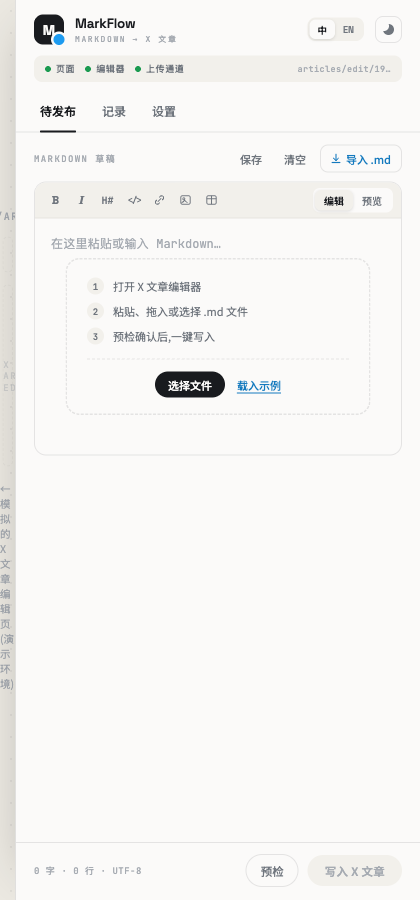
实现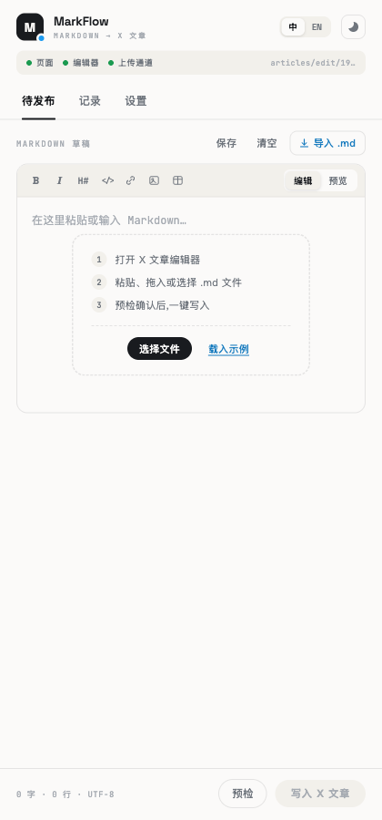
一致高度还原。 Header（M logo+蓝点 / MarkFlow / MARKDOWN → X 文章）、状态条（三绿灯 + articles/edit/19…）、Tabs、工具栏（B I H# </> 链接 图片 表格 · 编辑/预览）、三步引导（选择文件 / 载入示例）、Footer（0 字·0 行·UTF-8 + 预检/写入）逐一对齐。唯一差异是设计稿左缘的演示外壳文字（非产品元素）。
02
待发布 · 编辑态
极简主题 · 中文 · 载入示例后（编辑器 + 素材卡 + 能力映射折叠条）
设计稿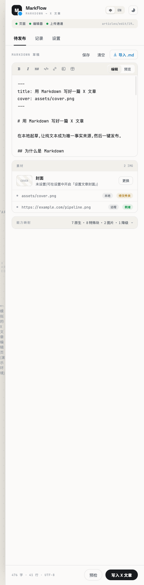
实现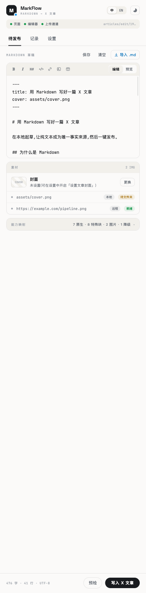
一致布局与内容一致。 编辑器等宽字体、frontmatter/标题/正文渲染、素材卡（2 IMG · 封面「未设置」+更换 · assets/cover.png [本地][待文件夹] · pipeline.png [远程][就绪]）、能力映射折叠条（7 原生·8 特殊块·2 图片·1 降级）、字数统计（476 字·41 行）全部对齐。
03
待发布 · 预览态
极简主题 · 中文 · react-markdown 渲染
设计稿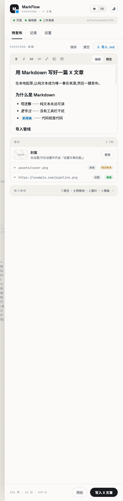
实现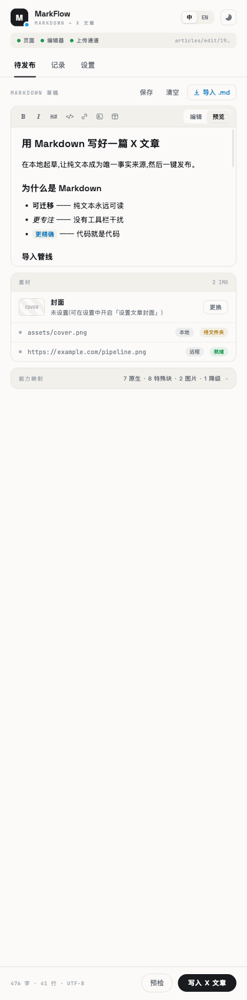
一致渲染基调一致。 大标题、二级标题、带破折号说明的列表项（可迁移 / 更专注 / 更精确）、行内高亮、正文段落间距与设计稿一致。react-markdown + remark-gfm 的输出与原型的渲染样式吻合。
04
能力映射面板（展开）
极简主题 · 中文 · 产品核心差异化面板
设计稿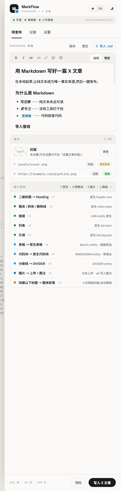
实现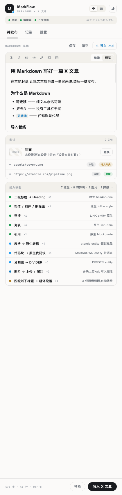
一致逐行精确还原。 10 个映射项（二级标题→Heading、粗/斜/删、链接、列表 ×3、引用、表格→原生表格 ×4、代码块→原生代码块、分割线→DIVIDER ×3、图片→上传+图注 ×2、四级以下标题→粗体段落）的名称、计数徽章（×N）、右侧原生映射说明、三色状态圆点（绿=原生 / 蓝=特殊块 / 橙=降级）完全对齐。
06
覆盖确认对话框
极简主题 · 中文 · 编辑器已有内容时的三选弹窗
设计稿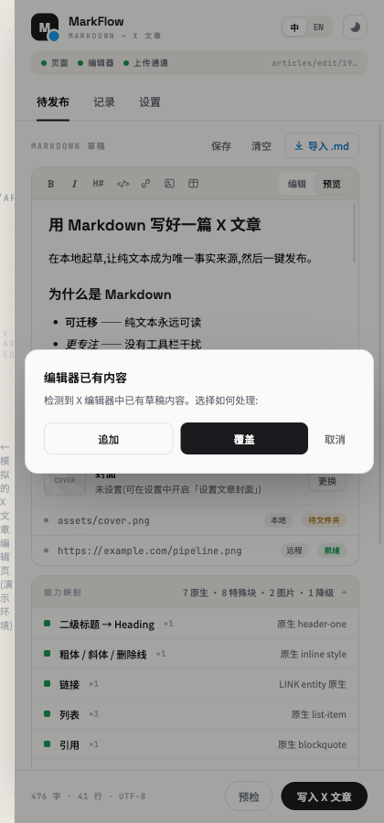
实现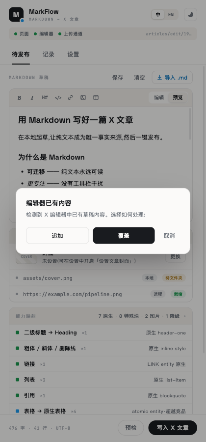
一致弹窗一致。 标题「编辑器已有内容」、副文案、追加 / 覆盖（深色主按钮）/ 取消三选、遮罩层一致。（两图背景分别为编辑态/预览态，属截图时机差异，弹窗本体完全一致。）
08
预检结果 + 导入报告
极简主题 · 中文 · 预检探针卡 + 导入完成逐项报告
设计稿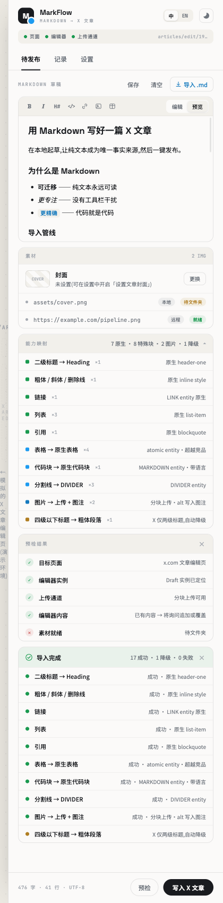
实现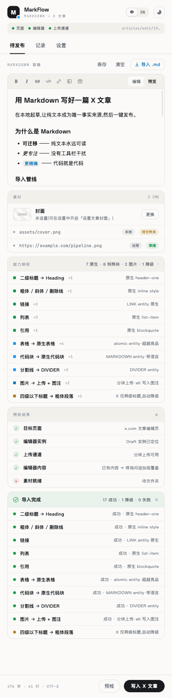
一致探针卡 + 报告卡结构一致。 预检结果（目标页面 ✓ / 编辑器实例 ✓ / 上传通道 ✓ / 编辑器内容 ✓ / 素材就绪 ✗ 待文件夹）与导入完成卡（17 成功·1 降级·0 失败 + 逐项映射结果，含「超越竞品」「带语言」「alt 写入图注」等标注）配色与层级对齐。
09
记录列表
极简主题 · 中文 · 已注入与设计稿相同的 3 条记录
设计稿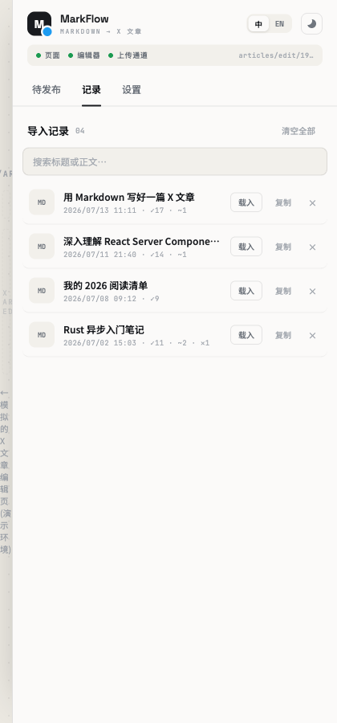
实现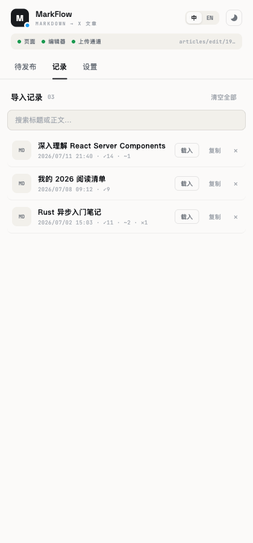
一致行渲染一致。 MD 头像、标题、日期·结果计数（✓成功 / ~降级 / ×失败）、载入·复制·× 操作、顶部搜索框与计数徽章一致。（实现侧通过 localStorage['markflow:history'] 注入了与设计稿相同的 3 条以做 1:1 对比。）
10
设置 · 极简主题
中文 · 主题四宫格 + 九组手风琴
设计稿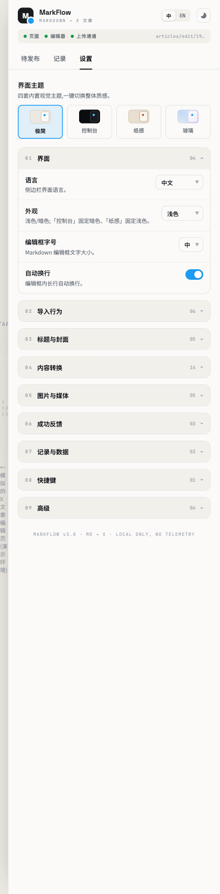
实现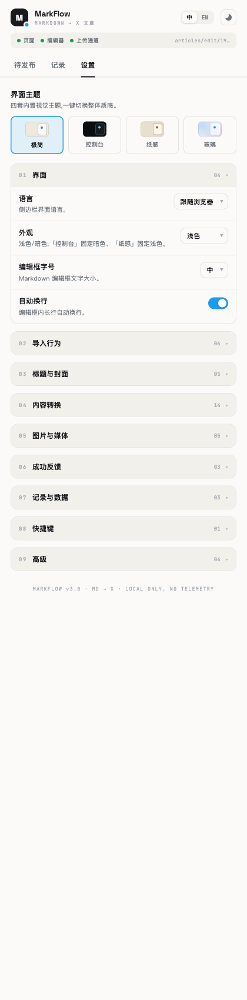
一致结构一致。 「界面主题」四宫格（极简选中蓝框 / 控制台 / 纸感 / 玻璃 swatch）、九组手风琴（序号 + 标题 + 计数 04/06/05/14/05/03/03/01/04 + chevron）、01 界面展开内容、footer 标语一致。留意：语言/外观下拉默认值差异见顶部说明（非缺陷）。
11
设置 · 控制台主题
中文 · 深色终端风（#0D1117 / 绿 / 等宽 / 小圆角）
设计稿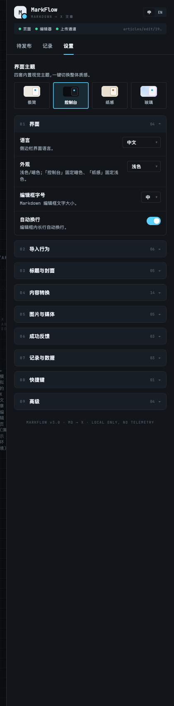
实现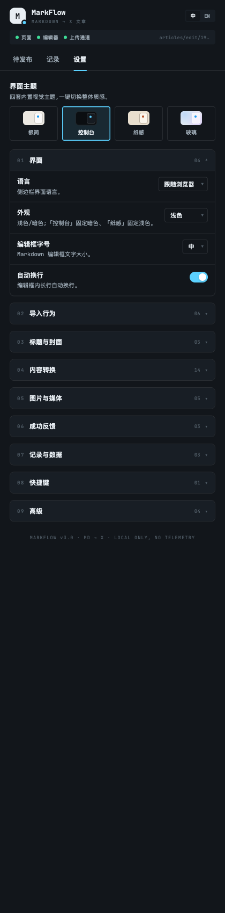
一致主题变量还原到位。 深色背景、绿色选中描边、蓝色强调、等宽字体、小圆角、footer 标语一致。
12
设置 · 纸感主题
中文 · 米黄暖色纸张风
设计稿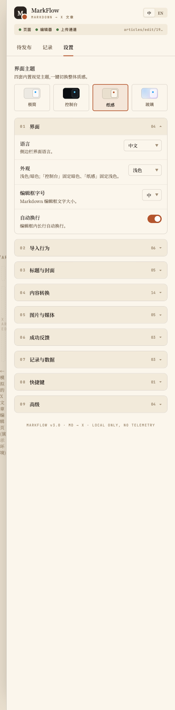
实现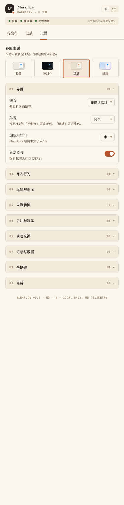
一致暖色纸张质感还原。 米黄背景、暖色描边、选中态、字体与设计稿一致。
13
设置 · 玻璃主题
中文 · 蓝紫渐变 + 半透明卡片
设计稿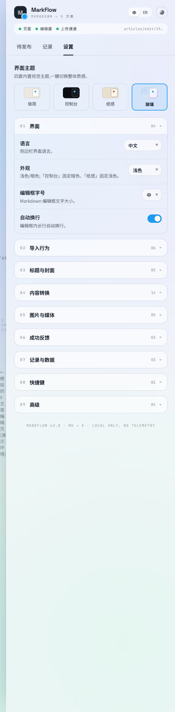
实现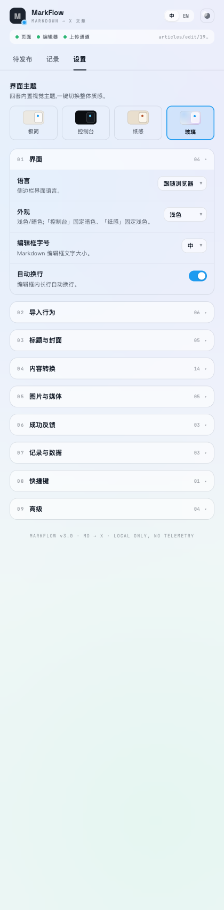
一致渐变与玻璃质感还原。 蓝紫→浅绿渐变背景、玻璃选中蓝框、半透明白卡片、蓝色强调一致。整体质感与设计稿吻合。
14
设置 · 英文
极简主题 · English · i18n 密度最高的页面
设计稿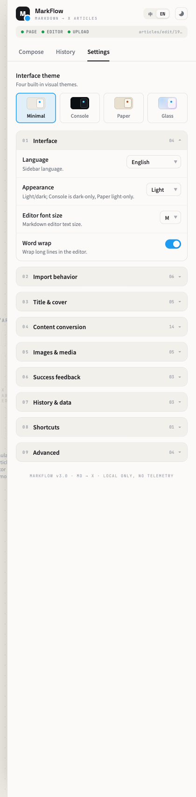
实现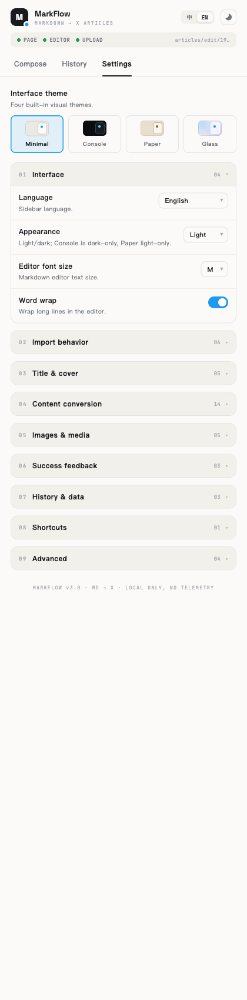
一致i18n 完整。 Interface theme / Four built-in visual themes / Minimal·Console·Paper·Glass / Language·Appearance·Editor font size·Word wrap / 九组标题（Import behavior … Advanced）/ 状态条 PAGE·EDITOR·UPLOAD / footer 全部翻译到位。
15
待发布 · 英文空态
极简主题 · English · Compose 空态引导
设计稿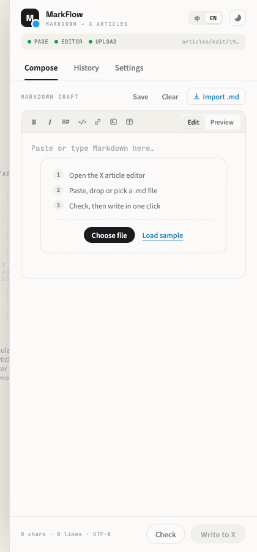
实现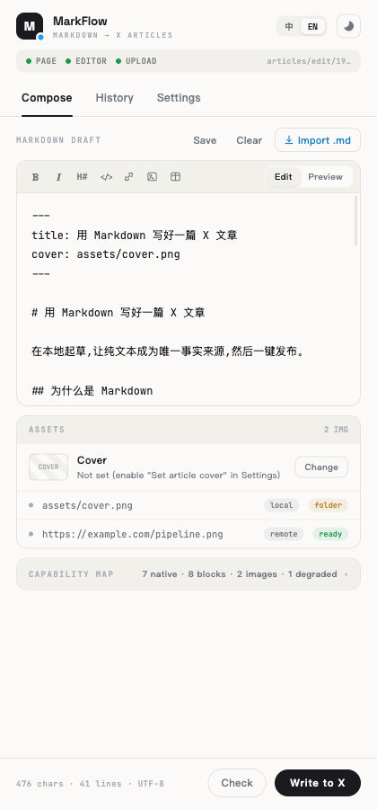
一致英文引导翻译到位。 Compose/History/Settings 标签、空态三步引导、工具栏与 Footer 英文文案与设计稿一致。